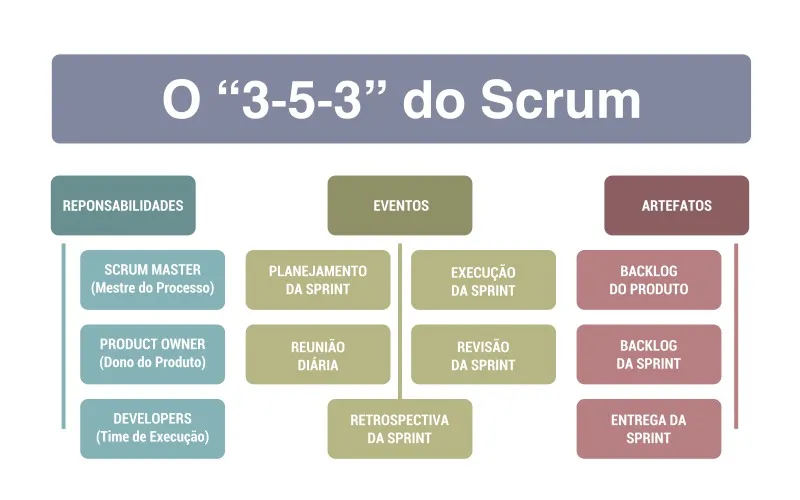

O método Scrum é uma abordagem ágil de gerenciamento de projetos e desenvolvimento de produtos. Ele dá foco para a colaboração transparência e adaptação contínua. No Scrum o trabalho é dividido em preíodos de tempo, chamados de sprints. Além disso, há papéis na equipe que utiliza o método: product Owner, Scrum Master e a equipe de desenvolvimento. Por fim, o método utiliza artefatos como o backlog do produto e da sprint para o planejamento e acompanhamento.
